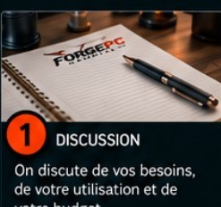
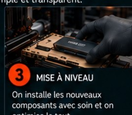
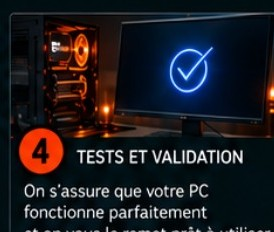
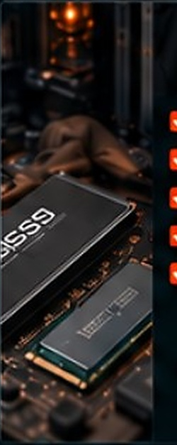
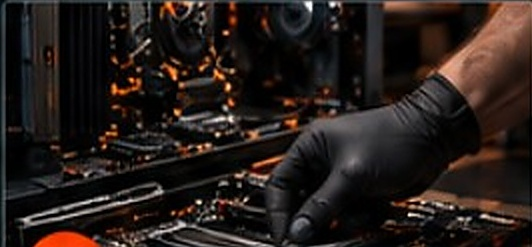

1
Discussion
On discute de vos besoins, de votre utilisation et de votre budget.
Plus de performance, plus de rapidité
et une meilleure expérience, sans avoir à
remplacer votre PC.
Un processus simple et transparent.

On discute de vos besoins, de votre utilisation et de votre budget.

On vérifie la compatibilité de votre matériel et on vous propose les meilleures options.

On installe les nouveaux composants avec soin et on optimise le tout.

On s’assure que votre PC fonctionne parfaitement et on vous le remet prêt à utiliser.

Un ordinateur plus performant ?
Plus de performance, plus de rapidité et une meilleure expérience, sans avoir à remplacer votre PC.
Un processus simple et transparent.

On discute de vos besoins, de votre utilisation et de votre budget.

On vérifie la compatibilité de votre matériel et on vous propose les meilleures options.

On installe les nouveaux composants avec soin et on optimise le tout.

On s’assure que votre PC fonctionne parfaitement et on vous le remet prêt à utiliser.
Un ordinateur plus performant ?